Figure 1. The workflow. Quality control (QC) feeds back into picking until the reciprocal errors are small.
Version 15 · first-break picking of SEG-Y shot gathers for refraction tomography
This manual explains every window of the picker, in the order you use them. Every figure was made with the picker itself on a synthetic survey (About the example data), so the numbers in the figures can be checked against known true travel times. Inside the picker, Help > User manual (F1) opens this manual beside the canvas. F1 in any window opens the section for that window. Help > Open the PDF manual opens this same text as a PDF.
The picker turns a set of SEG-Y shot gathers into first-arrival travel times for refraction (travel-time) tomography. The end product is an S G T file: three columns with the shot position (S), the geophone/receiver position (G) and the first-arrival time (T) of every picked shot–receiver pair. Tomography codes such as pyGIMLi read this file directly.
Figure 1. The workflow. Quality control (QC) feeds back into picking until the reciprocal errors are small.
Keep these files, and the manual folder, together in one folder:
| File | What it does |
|---|---|
first_arrival_picker.py | The script you run (Spyder cells): import, preprocessing, filtering, the picking canvas, menus, saving and the SGT export cells. |
data_importer.py | SEG-Y import window, header reading, geometry, spectra, survey geometry window. |
preprocess_designer.py | Integration / differentiation, time shift, mute, normalization, trace kills. |
filter_designer.py | Filter designer (minimum-phase FIR, zero-phase FIR, IIR; notch filters; timing). |
auto_pickers.py | Automatic picking: detectors, onset refinement, post-processing. |
reciprocity_analyzer.py | Reciprocity and pick QC window. |
pick_tools.py | Void picks, the plotted traces / time axis / gain window, shared gain control. |
help_manual.py | This manual inside the picker (Help menu, F1). |
The figures use a synthetic survey written as ordinary SEG-Y files (SYN_0900_*.segy), so the import runs exactly as on field data:
Python 3 with numpy, scipy, pandas, matplotlib, PyQt5, obspy, segypy and bruges (the last two are imported by the script). Spyder is the intended environment.
Spyder setting. The canvas must be interactive: Preferences > IPython console > Graphics > Backend = Qt (or run %matplotlib qt), then restart the kernel. With the inline backend the picker prints a warning and cannot take clicks. |
AUTO_CONTINUE_TO_PICKER = True).| Variable | Meaning |
|---|---|
USE_IMPORT_DIALOG | True: the import window opens. False: script mode, reads segy_data_path with search_string_for_segy_files and needs DATA_QUANTITY. |
DATA_QUANTITY | 'acceleration', 'velocity' or 'displacement': what the files contain (pre-selects the radio in the window). |
IMPORT_RECORD_FILE | An earlier …_import.json: repeats that import exactly, with no window. |
AUTO_OUTPUT_NAMES | Script mode: name the pick and SGT files from the line name and data type. |
LOAD_EXISTING_PICKS, EXISTING_PICKS_FILE | Script mode: continue from the auto-named pick file, or from a given .pkl or SGT file. |
AUTO_CONTINUE_TO_PICKER | Running only the import cell continues to the shot dialog. |
The import window opens at start-up and from File > Import SEG-Y data…. Work down its five groups on the left; the right side shows the files, the geometry and the spectra as they are read.

Figure 2. The import window after Read folder (batch) on the 11 synthetic shots. Right: the file table, the topography along the line with the shots (stars; the selected shot ringed) and the cross-line view.
*_stacked.segy), and Include sub-folders. Only .segy/.sgy files are listed.Choose Acceleration, Velocity or Displacement. When the SEG-Y textual header names one (for example “ACCELERATION (M/S2)”), it is pre-selected and a mismatch is noted. The choice decides which conversions preprocessing offers.
Use the header recording delay as the time shift: a delay of −50 ms means the record starts 50 ms before the shot. Preprocessing then advances every trace by 50 ms, so time zero is the shot time.
<line>_<type>_picks.pkl and <line>_<type>_SGT.txt, in a picks folder next to the data (or the output folder you choose). An existing file with that name triggers an overwrite warning..sgt files are read too. The outputs then follow the file you continue.Press Import, or close the window with valid files and a data type, to import. An import record <line>_<type>_import.json is written every time: it lists the files, data type, geometry and outputs. Load import record… fills the window from one.
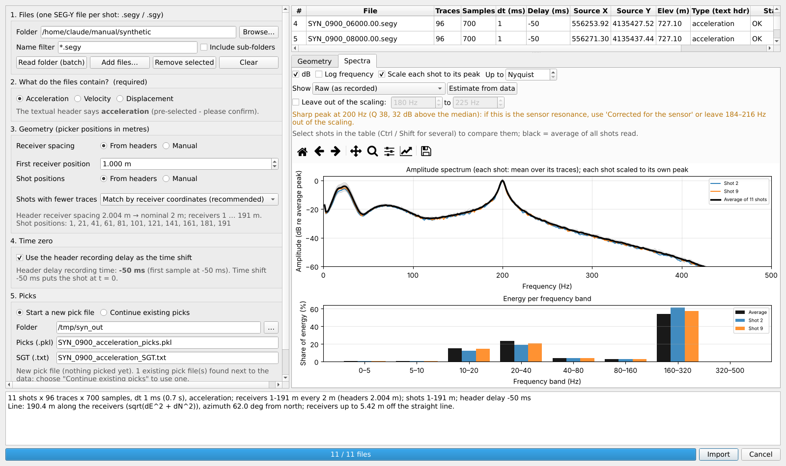
Select shots in the table (Ctrl / Shift for several) to compare their amplitude spectra. Each shot's spectrum is the mean over its traces. The views that look past a sensor resonance are explained in section 14.
After the import, the shot dialog asks which shot to open (1 to the number of shots, as in the plot title). It also sets the starting gain and the reciprocity guider. From it you can open the filter designer or preprocessing first. Enter submits.
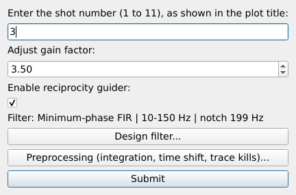
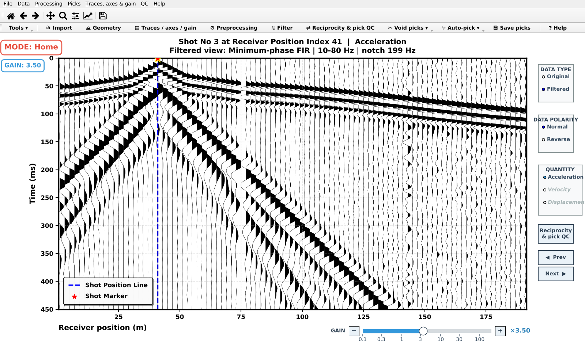
| Element | What it does |
|---|---|
| Title | Shot number and position, the quantity shown, and the filter of the filtered view. |
| MODE box | Current mode: Home, Manual Pick, Delete Picks (keys in section 6). |
| DATA TYPE | Original (preprocessed, not filtered) or Filtered. Toggle often: filtered data are easier to read, but the original shows the true onset. |
| DATA POLARITY | Normal or Reverse (flip the wiggles). |
| QUANTITY | Acceleration, velocity or displacement. A grey entry is not computed yet. Clicking it offers to open preprocessing with the conversion ticked. |
| Reciprocity & pick QC | Opens the QC window (section 12). |
| ◀ Prev / Next ▶ | Save the picks and open the neighbouring shot. |
| GAIN slider | Log scale from 0.1 to 200, with − / + (×1.25) and the mouse wheel over the slider. The zoom is kept. |
| Crosshair | Follows the mouse; the toolbar readout shows receiver, time (ms) and sample. |
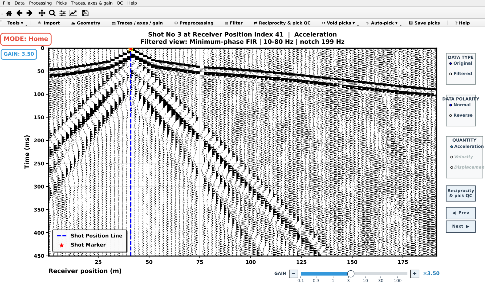
When other shots are already picked, the canvas marks with a blue ✕ the time each reciprocal pick predicts on this shot. The source of shot B sits at a receiver of shot A, so t(A→B) should equal t(B→A). A pick far from its ✕ deserves a second look.

Figure 7. Shot 7 zoomed in, with picks (red) and the reciprocity guider (blue ✕). The picks beyond 140 m were deliberately made 9 ms late: they sit below their ✕ marks.
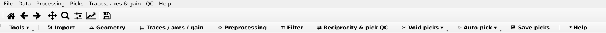
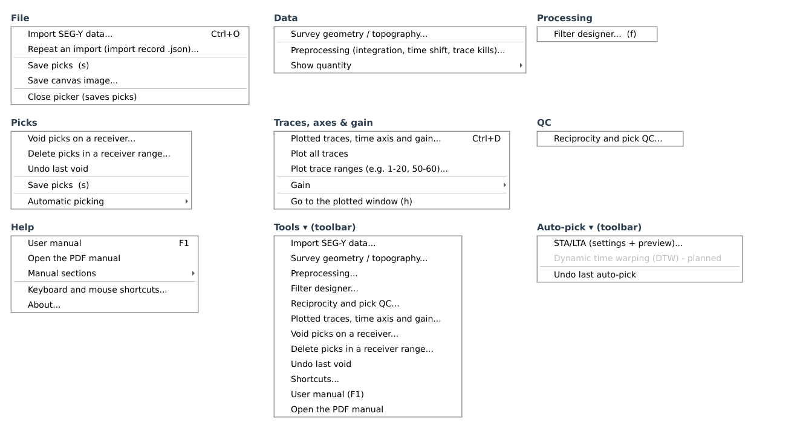
| Menu | Contents |
|---|---|
| File | Import SEG-Y data (Ctrl+O), Repeat an import record, Save picks, Save canvas image (PNG/PDF/SVG), Close picker. |
| Data | Survey geometry / topography, Preprocessing, Show quantity. |
| Processing | Filter designer (f). |
| Picks | Void picks on a trace, Undo last void, Save picks, Automatic picking (STA/LTA, Undo last auto-pick). |
| Traces, axes & gain | Plotted traces, time axis and gain (Ctrl+D), Plot all traces, Plot trace ranges, Gain submenu, Go to the plotted window (h). |
| QC | Reciprocity and pick QC. |
| Help | User manual (F1), Open the PDF manual, Manual sections, Keyboard and mouse shortcuts, About. |
The toolbar repeats the common actions: Tools ▾ (everything in one list), Import, Geometry, Traces / axes / gain, Preprocessing, Filter, Reciprocity & pick QC, Void picks, Auto-pick ▾, Save picks and Help.
Help > User manual, the Help button or F1 opens this manual as a side panel of the canvas. Press F1 again to hide it. Drag its title bar to float it as its own window or dock it on the other side.

Figure 10. The manual docked beside the canvas, opened at Automatic picking.
| Key | Mode / action |
|---|---|
| m | Manual Pick. Click: one pick, snapped to the nearest receiver and the nearest sample. Drag with the button held: a pick on every receiver you cross, interpolated between mouse positions (red line). Release and drag again to add strokes. |
| r | Delete Picks. Click two points: every pick between their receivers is removed (yellow dashed line). u undoes the last delete. |
| h | Home: finishes the picks and goes back to the plotted window. |
| z / d | Zoom box / pan (drag). Mouse wheel on the gather zooms. |
| s | Save picks to the pick file. |
| n | Save and choose another shot. |
| g | Type a gain value. |
New picks are kept as pending until you switch mode, save, change shot or press h. Then they are merged into the shot's picks: a new pick replaces the old one on the same receiver. Picks outside the plotted time range are rejected.
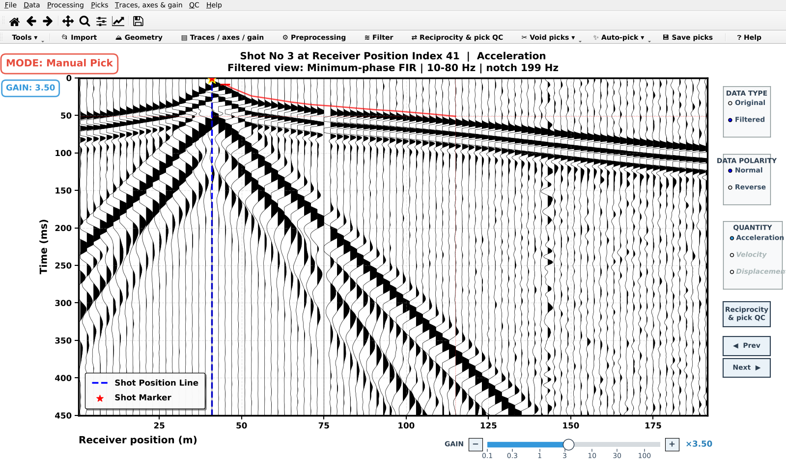

Figure 12. After Home (h): the stroke became one pick per receiver.
| Where to pick. Pick the first departure from the background, not the first peak. Every causal (minimum-phase) filter delays energy slightly. The filter designer reports the delay on your data (section 9); toggle to Original to check a difficult pick. |
Traces, axes & gain > Plotted traces, time axis and gain… (Ctrl+D, or Traces / axes / gain on the toolbar) sets what the canvas plots.

Figure 13. Traces 1–30 and 61–96, 0–250 ms.
1-100 or 1-20, 50-60, as trace numbers or receiver positions in metres. Traces in the gaps are not drawn and their space stays empty. Quick buttons pick halves or the first or last 50. Plot every Nth trace thins the selection (picks still show on every receiver). The line below counts the plotted traces; a range outside the gather is refused.The menu also has Plot all traces, Plot trace ranges… and a Gain submenu (×1.25, ÷1.25, set, presets ×1 / ×3.5 / ×10 / ×30).
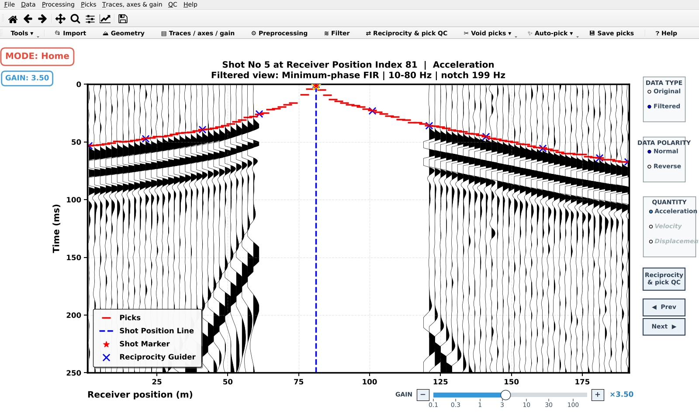
Data > Preprocessing… (also in the shot dialog) prepares the data before filtering and picking:
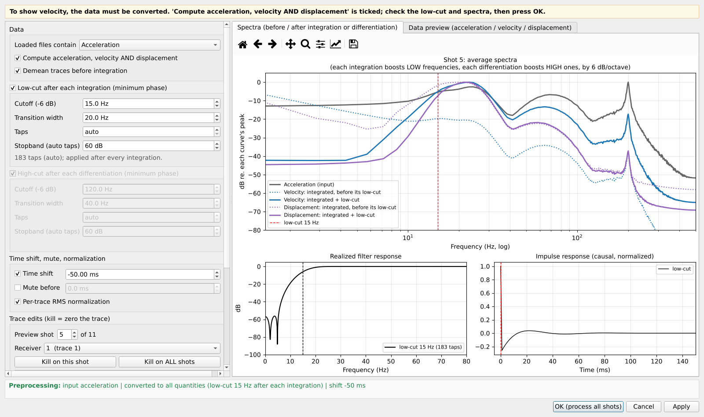
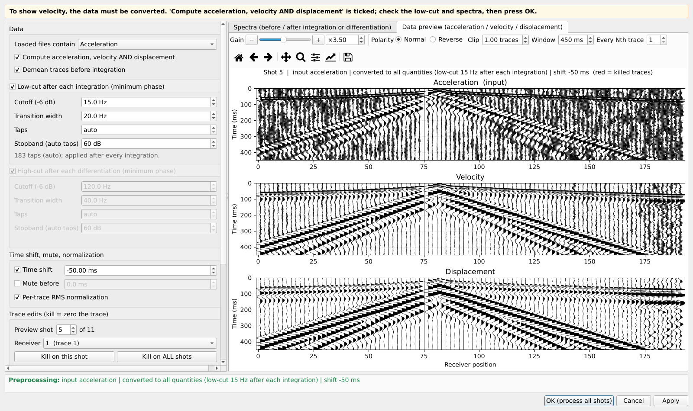
OK processes all shots; the QUANTITY switch on the canvas then offers all three quantities.
Processing > Filter designer… (key f) designs the filter of the Filtered view. It runs on the active quantity, and before the time shift: the shift is undone, the data filtered, and the shift re-applied, so filter transients stay before time zero.

Figure 17. Response tab: realized amplitude response, impulse response and the spectrum of the shot before and after.

Figure 18. Data preview tab: the shot before (top) and after (bottom) the filter, with the shared gain control.
The filter designer, the preprocessing window and the auto-pick preview share one gain control:
Both only change the display; the zoom stays. The Traces, axes & gain window has the same pair and drives the canvas.
Void picks ▾ on the toolbar (or the Picks menu) deletes picks without clicking on the canvas:
21-40 or 21-40, 55-60, 83 (both ends included), or positions in metres. Every pick on those receivers goes.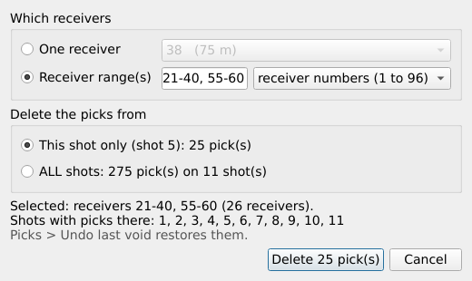
Auto-pick ▾ > STA/LTA (settings + preview)… on the toolbar, or Picks > Automatic picking, opens the settings with a live preview on any shot. Every change re-picks the preview shot, so you can tune before applying.
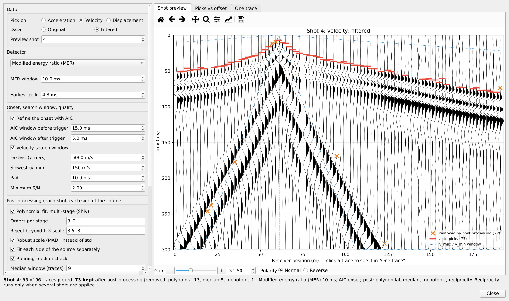
Pick on acceleration, velocity or displacement; Original or Filtered data; the Preview shot.
0:0.01, 10:0.0025, 25:0.002).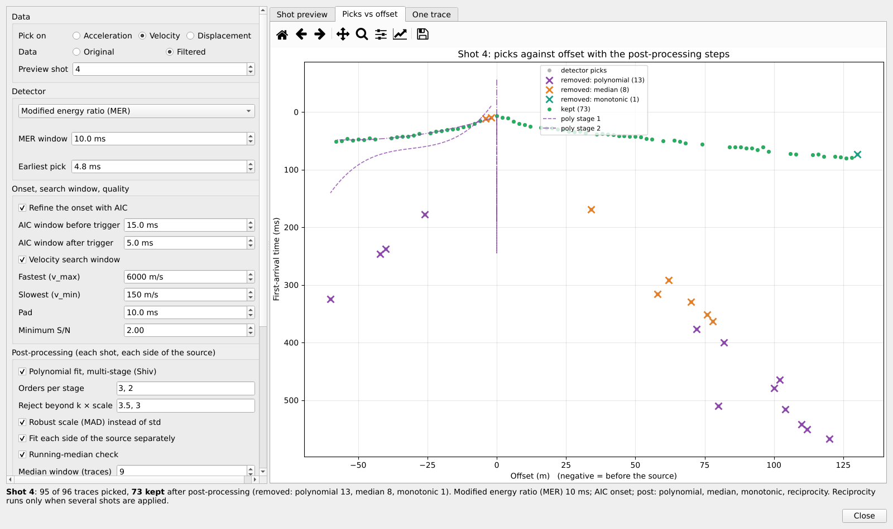

Figure 22. One trace (click a trace in the shot preview): the trace, the characteristic function, the trigger, the AIC onset and the pick.
2-10.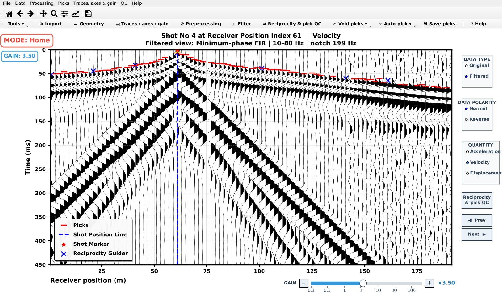
Because the example survey has known first-arrival times, the detectors can be scored. All results use velocity, filtered with the default 10–80 Hz filter, with the default post-processing on all 11 shots (1056 receiver–shot pairs). The error is pick minus true time.
| Detector (velocity, filtered) | Picks kept | Median error | 90 % of |error| below |
|---|---|---|---|
| Classic STA/LTA, defaults | 521 | +3.2 ms | 5.7 ms |
| Classic STA/LTA, trigger level 4 | 797 | +3.8 ms | 5.2 ms |
| MER, defaults | 809 | +3.5 ms | 4.7 ms |
| Shiv's original | 353 | +3.0 ms | 7.3 ms |
QC > Reciprocity and pick QC… (or the button on the canvas) opens a live window. It updates as you pick, so you can keep it on a second screen.

Figure 24. Picks (all shots): every pick of every shot on one canvas, coloured by shot position, with the shot on the picker canvas in black. Red rings flag picks whose reciprocal |Δt| exceeds the threshold. Right: the reciprocal-error map. The 9 ms segment of shot 7 shows as dark cells in row and column 7.
| Tab | What it shows |
|---|---|
| Picks (all shots) | All picks; flags; click a pick for its details; double-click opens that shot in the picker. Lines joins each shot's picks. Fit all resets the view. |
| Shots | Per shot: picks, pairs, median / mean / max |Δt|, bias, the robust (Huber) time offset, the residual after it, the count above the threshold, the status and the reason. |
| Map | The shot-by-shot map of the reciprocal error (click a cell: both picks are marked; double-click opens the shot) and the median per shot. |
| Pairs | Every reciprocal pair, worst first. |
| Missing picks | Pairs where one of the two picks is missing. |
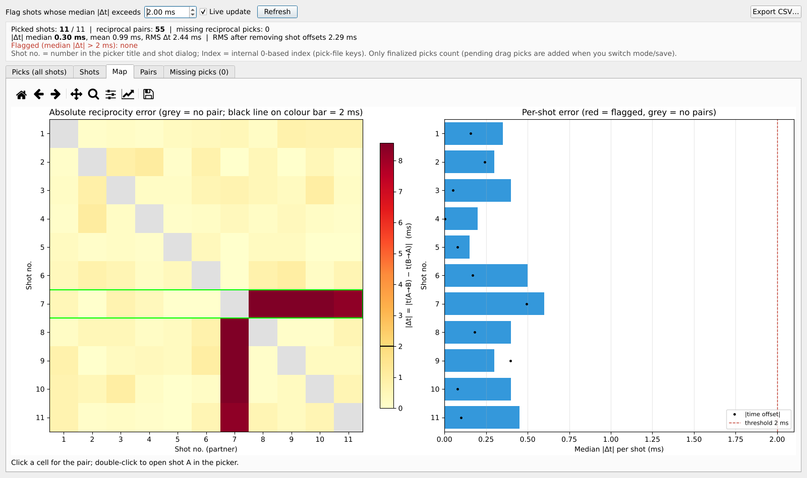

Figure 26. Shots tab, sorted by median |Δt|. Shot 7 has a bias of +3.6 ms and 4 pairs above the threshold.
Tick Delete mode:
Then open the shot (double-click) and pick the deleted receivers again. Export CSV… saves the tables.

Figure 27. Delete mode: click a pick or drag a box; Undo and Redo become active.
Data > Survey geometry / topography… (toolbar Geometry) shows the line as imported:
Double-click a shot to open it in the picker.
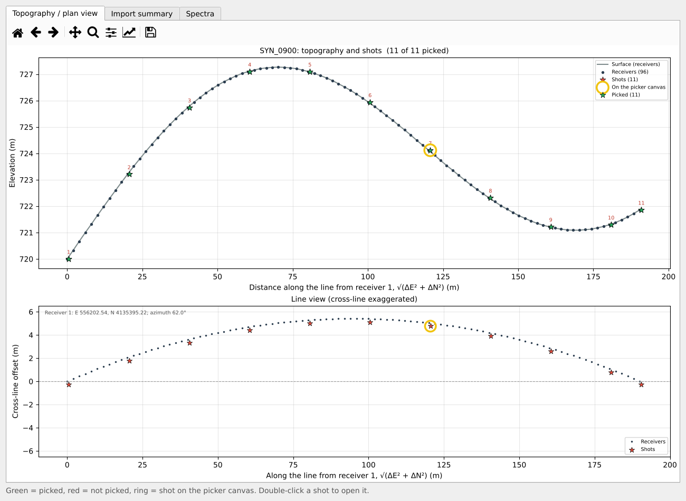
Accelerometers and geophones shape what they record. A lightly damped resonance can hold most of the recorded energy and squash the rest of the spectrum. The Spectra tabs of the import and geometry windows have three views:
Leave out of the scaling takes a band (e.g. 184–216 Hz) out of the peak scaling, the dB reference and the energy shares; the band is still drawn, shaded.
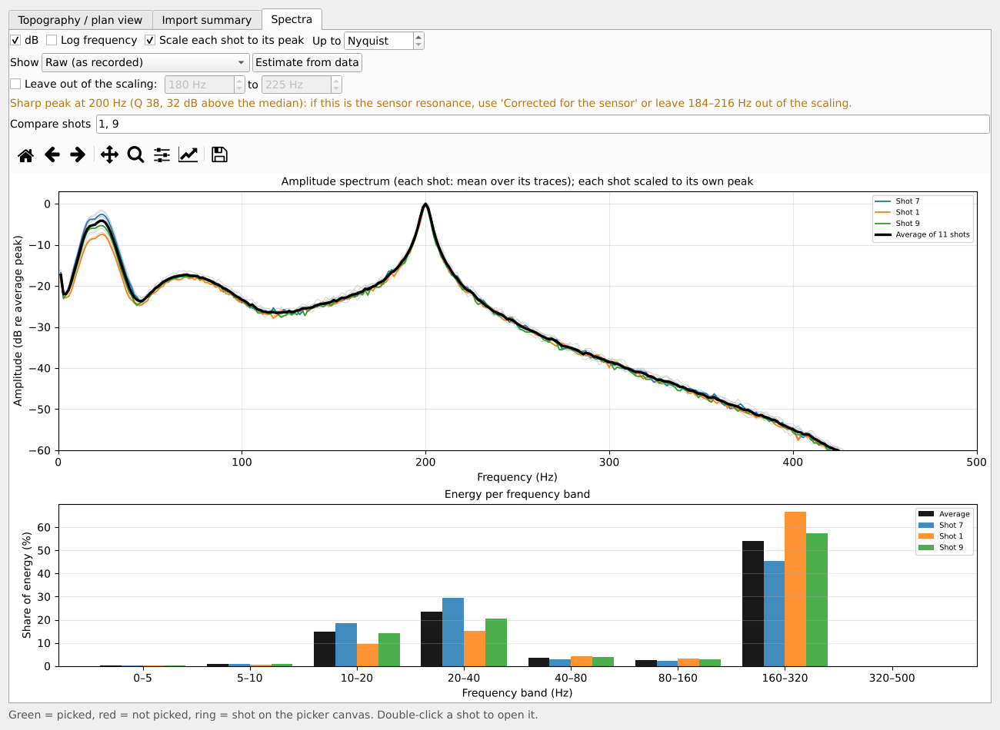

Figure 30. Corrected for the estimated accelerometer response (f0 200.0 Hz, damping ≈ 0.013; the true value in the synthetic is 0.015): the resonance is gone and the 10–80 Hz signal and ground-roll band shows.

Figure 31. Relative to the survey average, with the resonance band left out: how each shot differs from the survey.
| File | Contents |
|---|---|
<line>_<type>_picks.pkl | The picks: final_picks (per shot, an array of [receiver position, time sample at 0.1 ms]), the clicked points, and metadata (data type, preprocessing, filter, geometry, import record, last auto-pick settings). Written by s, Save picks, Prev/Next, every QC edit and every auto-pick. |
<line>_<type>_SGT.txt | The export: one row per pick, S G T, written by the end-of-session cells. |
<line>_<type>_import.json | The import record (files, data type, geometry, outputs). |
shot_<n>_plot.png | Canvas images (Ctrl+S; File > Save canvas image chooses the name and format). |
After picking, run the cells below End of the picking session one at a time. They:
The columns are:
The first rows for the example survey (true times) would be:
1.000000 1.000000 0.000000 1.000000 3.000000 0.004400 1.000000 5.000000 0.008900 ...
The import reads such a file back (and detects the convention), so you can continue picking from an exported SGT.
| Key / mouse | Action |
|---|---|
| m | Manual Pick (click / drag) |
| r, u | Delete picks between two clicks; undo the last delete |
| h | Home: finish picks, go to the plotted window |
| z, d | Zoom box, pan |
| g | Type a gain |
| s | Save picks |
| n | Save and choose a shot |
| f | Filter designer |
| Ctrl+S | Save the canvas as an image |
| Ctrl+O | Import SEG-Y data |
| Ctrl+D | Plotted traces, time axis and gain |
| F1 | User manual (in any window: help for that window) |
| Wheel on the gather | Zoom |
| Wheel on the gain slider | Gain ×/÷ 1.25 |
| Ctrl + wheel in a preview | Gain of that preview |
| Ctrl+Z / Ctrl+Y (QC window) | Undo / redo deletes |
| Symptom | Cause and fix |
|---|---|
| The canvas does not react to clicks; a warning about the inline backend. | Set Spyder's graphics backend to Qt and restart the kernel (section 2). |
| “Rejected pick … out of sample range”. | The pick is outside the plotted time window; widen it (Ctrl+D). |
| A quantity is grey on the canvas. | Not computed yet: accept the prompt, tick Compute acceleration, velocity AND displacement in preprocessing. |
| Import refuses a file. | Different sample interval, or unreadable SEG-Y. The table says which; remove it and import the rest. |
| An SGT file is refused when continuing. | It does not match the imported geometry (less than 90 % of rows fit). Check that it belongs to these files and this geometry. |
| Automatic picking keeps few picks. | Try MER or a higher trigger level, check the velocity window, and look at Picks vs offset to see which step removes them (section 11). |
| Picks look a few ms late on filtered data. | Filter delay: see the timing line in the filter designer; try Wider band or No high-cut, and check on Original. |
| Help says the manual was not found. | Keep the manual folder (manual.html, images, PDF) next to the .py files. |
| Version | Main changes |
|---|---|
| v1–v4 | Filters merged (minimum-phase FIR, zero-phase FIR, IIR), balanced wiggles, filter designer with live preview, resampling ×10 for picking. |
| v5 | Live reciprocity window with robust shot offsets and flags. |
| v6–v7 | Preprocessing window, quantity switch, menus and toolbar, log gain slider to 200, void picks, Prev / Next. |
| v8–v9 | SEG-Y import window (headers, geometry, time zero, automatic names, import record), continuing from .pkl or SGT, filter timing presets. |
| v10 | Display settings, time axis in ms, Reciprocity and pick QC with all picks, delete mode, undo / redo. |
| v11 | Automatic picking (STA/LTA, MER, original routine; AIC; post-processing) with live preview; shot spectra. |
| v12 | File menu with import from the picker; trace ranges; gain in every preview; spectra corrected for the sensor response. |
| v13 | This manual: built into the picker (Help menu, F1, side panel) and as a PDF. |
| v15 | Polarity switch beside every preview gain; Delete-mode zoom fixes (r no longer jumps to an old view, no flash after deleting); delete picks in typed receiver ranges; larger MODE / GAIN boxes and legend. |
| v14 | Default filter back to the original configuration (minimum-phase 10–80 Hz, notch 199 Hz); 10–150 Hz kept as the Wider band preset. |
Built 17 November 2026. The same text is in First_Arrival_Picker_User_Manual.pdf.